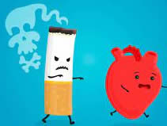
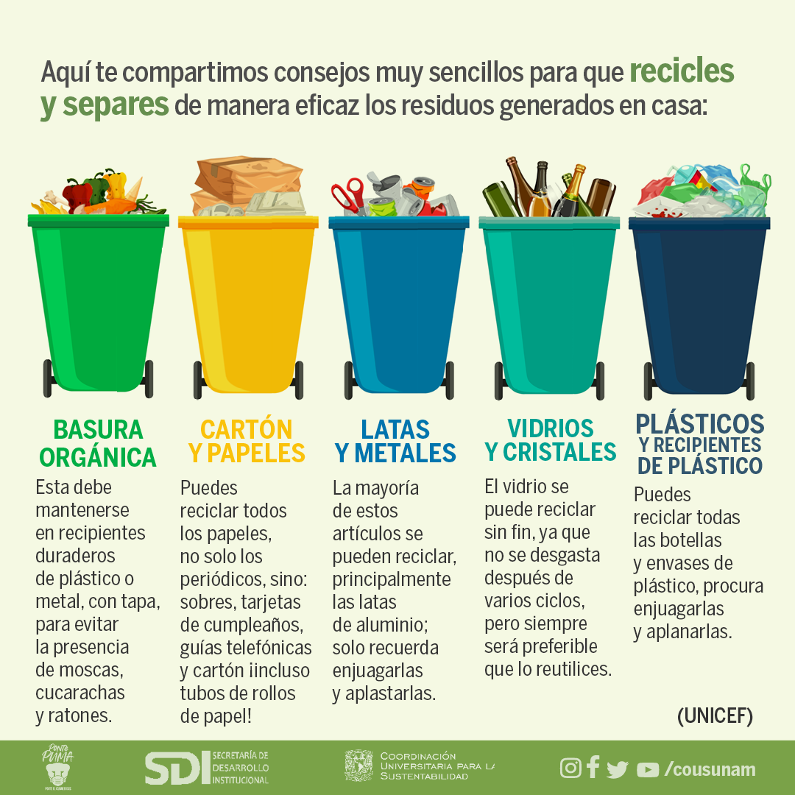

.jpg)
Utilizar el transporte público: Nos hemos acostumbrado a utilizar el coche para todo, pero es hora de pensar en el planeta y en nuestro futuro y de usar medios de transporte más sostenibles y respetuosos con el medioambiente. El transporte público es una buena solución, más barata y menos contaminante que el coche.
Utiliza otros transportes: realiza todo el desplazamiento posible que se pueda realizar en bicicleta o andando.
Comprar productos locales: Una de las cosas que más contamina son los vehículos. Si compramos productos locales evitamos que lo que adquirimos en el supermercado se transporte desde lugares lejanos, con el gasto de combustible y la contaminación que esto supone.
Consumir productos ecológicos: Para la producción de productos ecológicos se evita el uso de elementos químicos que puedan perjudicar al medioambiente. No solo los puedes encontrar en alimentación, también en limpieza, moda o cosmética.
Reciclar: Solemos tener claro dónde tirar los envases o el vidrio, pero en muchos otros casos no sabemos dónde tirar los residuos y la primera norma para reciclar es separar. Por ejemplo, en el contenedor de residuos orgánicos podemos tirar: comida, ceniza, papel sucio, bastoncillos etc.
Reduce el consumo de plásticos: Utilizamos mucho plástico y la mayoría es de un solo uso. Se estima que el tiempo medio de uso de una bolsa de plástico es de 10 minutos y tarda unos 400 años en degradarse. Como consecuencia de lo anterior, es fundamental evitar el consumo de plástico y para lograrlo puedes hacer varias cosas: Utiliza bolsas reciclables cuando vayas a comprar.
Evita los productos envasados en plástico y aquellos que están envasados: en papel, cartón o vidrio. Compra productos a granel como legumbres, frutos secos, jabones etc.
Elige energías renovables: Las energías renovables son aquellas que se obtienen de fuentes naturales que producen energía de manera inagotable como pueden ser el sol, el aire o el mar.
Elimina el uso de pesticidas y aerosoles: Cuando plantes tu jardín o cuides tus matitas, no uses pesticidas. Además, evita toda clase de aerosoles, o al menos confirma que sean seguros para el ambiente.
Evita hacer ruido: La contaminación sónica también es un grave problema ambiental. Tanto como puedas, evita sumar más decibeles a la ya ruidosa ciudad.
Utilizar bombillas de bajo consumo: con ello lograrás tener la misma luz a través del uso de energía eficiente.
No fumar en espacios cerrados: sal a la terraza o si la casa lo permite, habilitar una zona para fumadores que esté aislada del resto del hogar y que pueda ventilarse con facilidad.

Dieta basada en vegetales:Otro de los sectores que más contaminación ambiental puede llegar a producir es la ganadería, a la que es necesario destinar grandes territorios de cultivo para alimentar al ganado. Si nuestra dieta sustituye productos de origen animal por otros como las legumbres o los frutos secos (ricos en proteínas), reduciremos considerablemente la contaminación ambiental causada por la ganadería.
Usa tu propia bolsa para las compras:Créate el hábito de llevar tus bolsas de tela o de material reciclado cuando vayas de compras.

Esta organización mexicana lleva 30 años promoviendo cambios en las legislaciones para proteger el medio ambiente. Además de que han logrado muchos de estos cambios, tienen la opción de que dones por muchos medios diferentes. Ellos se involucran en temas como cambio climático, restauración ecológica, biodiversidad, educación ambiental y hasta tienen programas de voluntariado empresarial.
FMCN financia y fortalece acciones y proyectos para conservar el patrimonio natural de México. Su misión es construir un mejor futuro para México a través de la movilización de recursos financieros, la creación de alianzas, el aprendizaje y la toma de oportunidades enfocadas en la conservación y aprovechamiento del capital natural.
El CEMDA es una organización no gubernamental, apolítica y sin fines de lucro que desde hace 25 años trabaja para la defensa del medio ambiente y los recursos naturales. Es una de las principales organizaciones de la sociedad civil ambiental en México.
Organización civil sin fines de lucro fundada en 1990 que promueve la conservación de los ecosistemas y especies silvestres en México a través de la divulgación, la educación ambiental y el desarrollo de actividades en campo. Cuentan con programas de conservación de especies y ecosistemas como el rescate del lobo mexicano, la conservación del jaguar del norte en Sonora, la reforestación de las áreas naturales alrededor del Valle de México, etc.
La OMCA nace en el 2009 en la Ciudad de Playa del Carmen para contribuir a la conservación de los recursos naturales. Es una Asociación civil apartidista y sin fines de lucro, que busca por medio de sus actividades la mejora de las políticas públicas, la generación y difusión de información, el empoderamiento y la participación de la sociedad, y la promoción de la educación como herramienta básica y fundamental para el desarrollo equilibrado y duradero en México.
Fundada en Suiza en 1961, lleva presente en México desde 1990 y es considerada como la organización líder de la conservación mundial. Interesada en todos los temas de conservación ambiental, la WWF tiene iniciativas para cuidar de la biodiversidad mexicana y ha sido una gran aliada de las especies en peligro de extinción.
Quizás la organización para ayudar al medio ambiente más conocida de todas; inició en Canadá en 1971 y se ha propagado a todas las esquinas del mundo. Mediante la denuncia, ha señalado y exigido corrección en las irregularidades gubernamentales y privadas que afectan al medio ambiente.